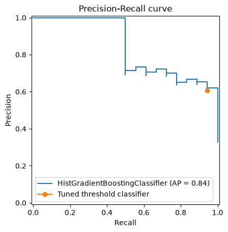
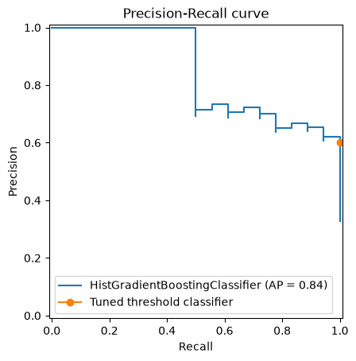

Bonus section#
We will do this part if we have time. In the previous section, we saw that the
FixedThresholdClassifier is a way to change the threshold of the classifier.
However, we might want to find the best threshold that maximizes a metric.
This is the job of the TunedThresholdClassifierCV.
display = PrecisionRecallDisplay.from_estimator(hist_gradient_boosting, X_test, y_test)
display.ax_.legend()
_ = display.ax_.set(xlabel="Recall", ylabel="Precision", title="Precision-Recall curve")
Let’s find on this curve, which model is maximizing the F1-score.
from sklearn.metrics import f1_score, make_scorer
from sklearn.model_selection import TunedThresholdClassifierCV
# we need to pass pos_label because we have a binary classifier with classes other than
# 0 and 1 or -1 and 1
scorer = make_scorer(f1_score, pos_label=hist_gradient_boosting.classes_[1])
tuned_threshold_classifier = TunedThresholdClassifierCV(
hist_gradient_boosting,
cv=3,
scoring=scorer,
).fit(X_train, y_train)
tuned_threshold_classifier.best_threshold_
np.float64(0.2552773524340397)
precision = precision_score(
y_test,
tuned_threshold_classifier.predict(X_test),
pos_label=tuned_threshold_classifier.classes_[1],
)
recall = recall_score(
y_test,
tuned_threshold_classifier.predict(X_test),
pos_label=tuned_threshold_classifier.classes_[1],
)
display = PrecisionRecallDisplay.from_estimator(hist_gradient_boosting, X_test, y_test)
display.ax_.plot(recall, precision, marker="o", label="Tuned threshold classifier")
display.ax_.legend()
_ = display.ax_.set(xlabel="Recall", ylabel="Precision", title="Precision-Recall curve")

Here, we therefore found the threshold that maximizes the F1-score. We could do the same for other metrics.
Actually, we can go a bit further by maximizing a metric while having a constraint on another metric. For instance, we might want to maximize the recall while having a precision greater than 0.5.
In this case, we need to define a custom scorer.
import numpy as np
def max_recall_at_min_precision(y_true, y_pred, min_precision, pos_label):
precision = precision_score(y_true.tolist(), y_pred, pos_label=pos_label)
recall = recall_score(y_true.tolist(), y_pred, pos_label=pos_label)
if precision < min_precision:
return -np.inf
return recall
scorer = make_scorer(
max_recall_at_min_precision,
min_precision=0.5,
pos_label=hist_gradient_boosting.classes_[1],
)
tuned_threshold_classifier.set_params(scoring=scorer, store_cv_results=True).fit(X_train, y_train)
TunedThresholdClassifierCV(cv=3, estimator=HistGradientBoostingClassifier(),
scoring=make_scorer(max_recall_at_min_precision, response_method='predict', min_precision=0.5, pos_label=Chinstrap penguin (Pygoscelis antarctica)),
store_cv_results=True)In a Jupyter environment, please rerun this cell to show the HTML representation or trust the notebook. On GitHub, the HTML representation is unable to render, please try loading this page with nbviewer.org.
Parameters
Fitted attributes
Parameters
Fitted attributes
tuned_threshold_classifier.best_threshold_
np.float64(0.1087976057523622)
precision = precision_score(
y_test,
tuned_threshold_classifier.predict(X_test),
pos_label=tuned_threshold_classifier.classes_[1],
)
recall = recall_score(
y_test,
tuned_threshold_classifier.predict(X_test),
pos_label=tuned_threshold_classifier.classes_[1],
)
display = PrecisionRecallDisplay.from_estimator(hist_gradient_boosting, X_test, y_test)
display.ax_.plot(recall, precision, marker="o", label="Tuned threshold classifier")
display.ax_.legend()
_ = display.ax_.set(xlabel="Recall", ylabel="Precision", title="Precision-Recall curve")
